Cultural Escapes
Galway City Walking Tour
Discover Galway's colourful Latin Quarter, historic streets, local legends and traditional music heritage.
Galway City, Co. Galway
2 hours
€25
DISCOVER YOUR NEXT ADVENTURE
From vibrant cities to Ireland's wild coastlines, find your next memorable experience with Emerald Escapes.
Cultural Escapes
Discover Galway's colourful Latin Quarter, historic streets, local legends and traditional music heritage.
Galway City, Co. Galway
2 hours
€25
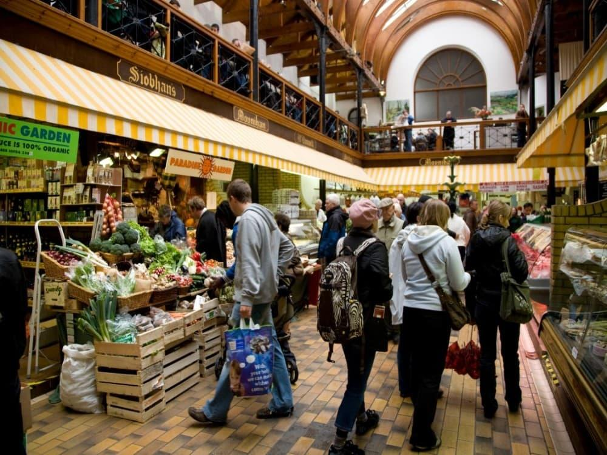
Food & Drink
Explore the English Market and discover locally inspired flavours, traditional Irish produce and Cork's culinary heritage.
Cork City, Co. Cork
2hours
€45
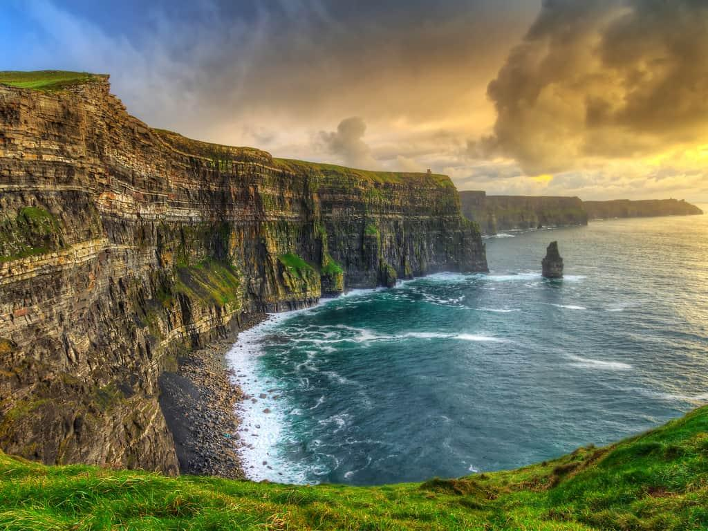
Coastal Escapes
Experience spectacular Atlantic views, dramatic cliff formations and the natural beauty of Ireland's western coastline.
Cliffs of Moher, Co. Clare
2hours
€45
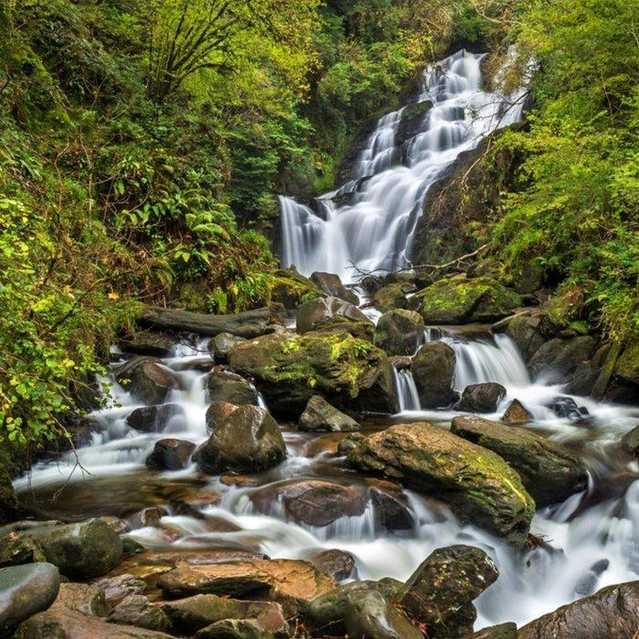
Hiking Retreats
Kilkenny, Co. Kerry
3 hours
Difficulty: Easy–moderate
Follow scenic mountain trails above Glendalough's lakes, discovering woodland, waterfalls and sweeping valley views.
€30
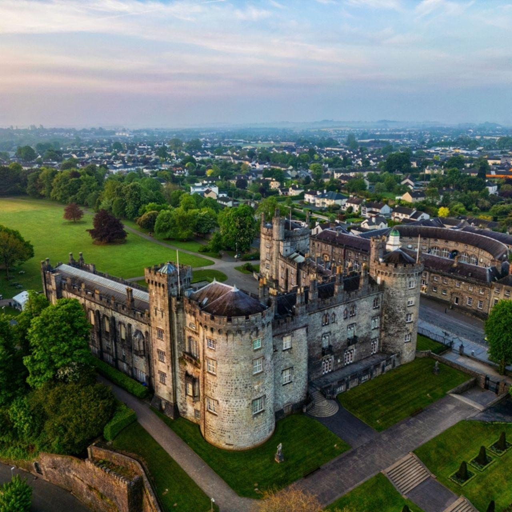
Cultural Escapes
Wander through medieval streets and discover the stories surrounding Kilkenny Castle, ancient churches and merchant history.
Kilkenny, Co. Kilkenny
3 hours
€35
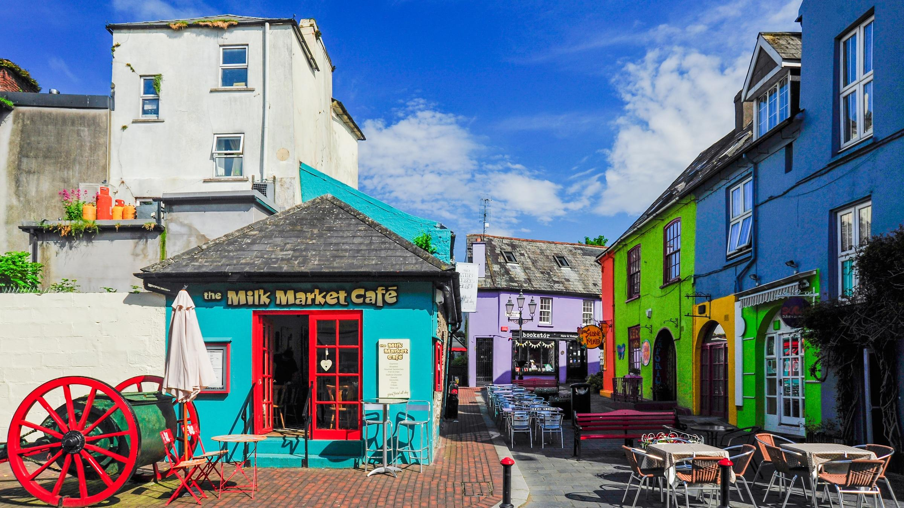
Food & Drink
Discover the flavours of this colourful harbour town through coastal food traditions, local seafood and culinary storytelling.
Kinsale, Co. Cork
3 hours
€65
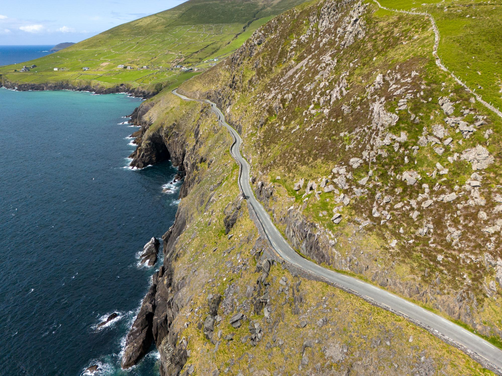
Coastal Escapes
Discover hidden beaches, ancient settlements, coastal viewpoints and the breathtaking scenery of Slea Head.
Dingle Peninsula, Co. Kerry
5 hours
€75
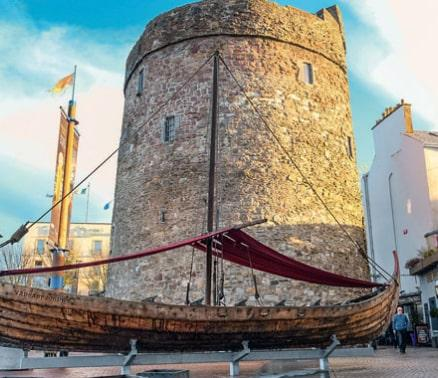
Cultural Escapes
Explore Ireland's oldest city through its Viking heritage, medieval landmarks and centuries of maritime history.
Waterford, Ireland
2 hours
€48
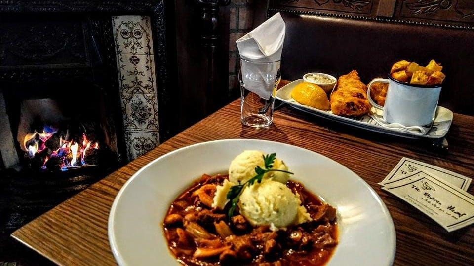
Food & Drink
Experience traditional Irish dishes, historic pub culture and the stories behind Dublin's food and hospitality.
Dublin City, Co. Dublin
3 hours
€55
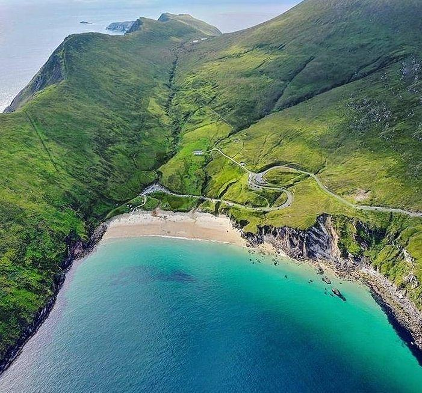
Coastal Escapes
Explore the island's rugged landscapes, picturesque villages and breathtaking views of Keem Bay.
Achill Island, Co. Mayo
4 hours
€55
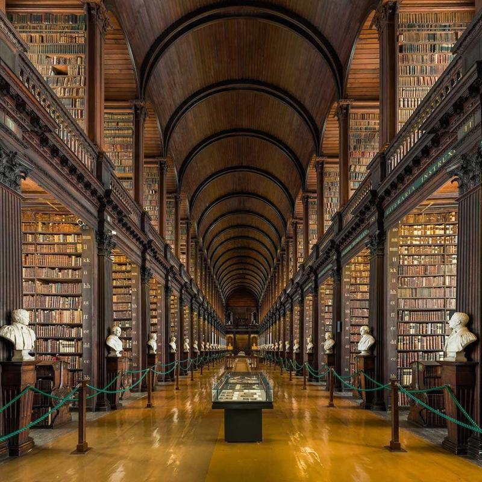
Cultural Escapes
Discover Dublin's literary and political heritage while exploring Trinity College's surroundings and historic city landmarks.
Dublin, Ireland
3 hours
€40
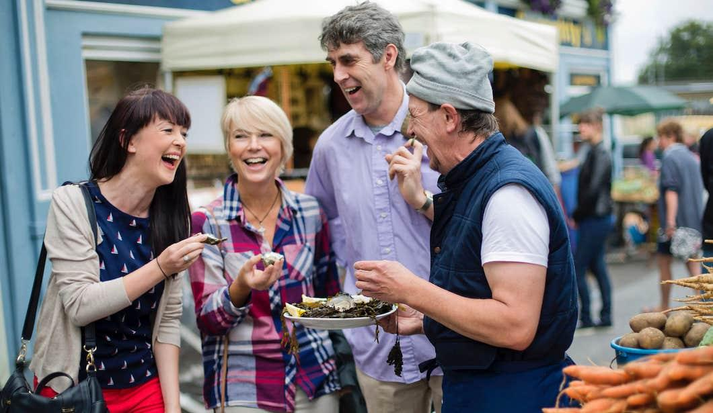
Food & Drink
Sample the culinary traditions of Ireland's west coast with a focus on Galway's seafood and artisan food culture.
Galway, Ireland
2 hours
€50
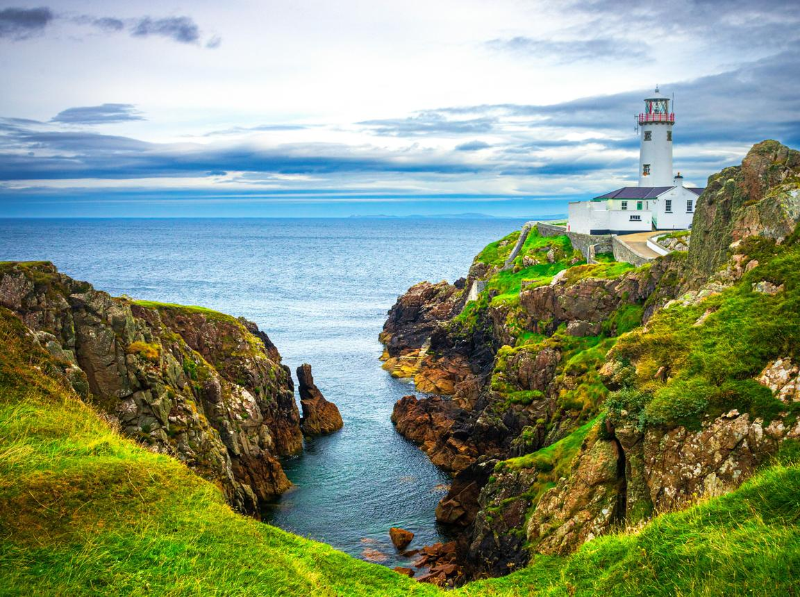
Coastal Escapes
Discover dramatic Atlantic scenery, lighthouse heritage and the wild coastal landscapes of northern Donegal.
Fanad Peninsula, Co. Donegal
3 hours
€45
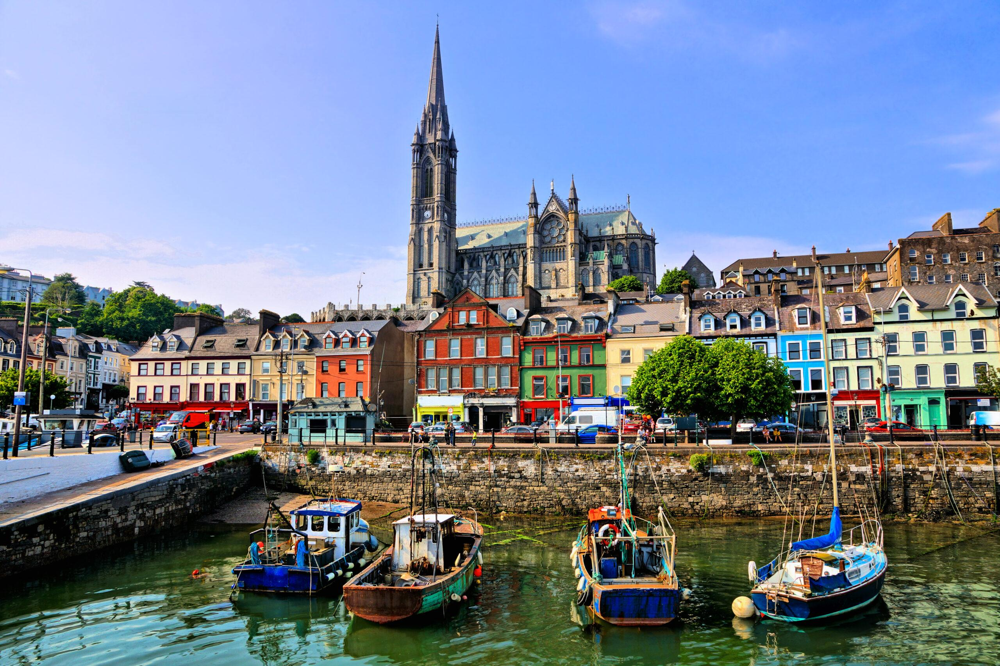
Cultural Escapes
Discover Cobh's maritime history, its connection to the Titanic and the experiences of emigrants who departed Ireland's shores.
Cobh, Ireland
2 hours
€30
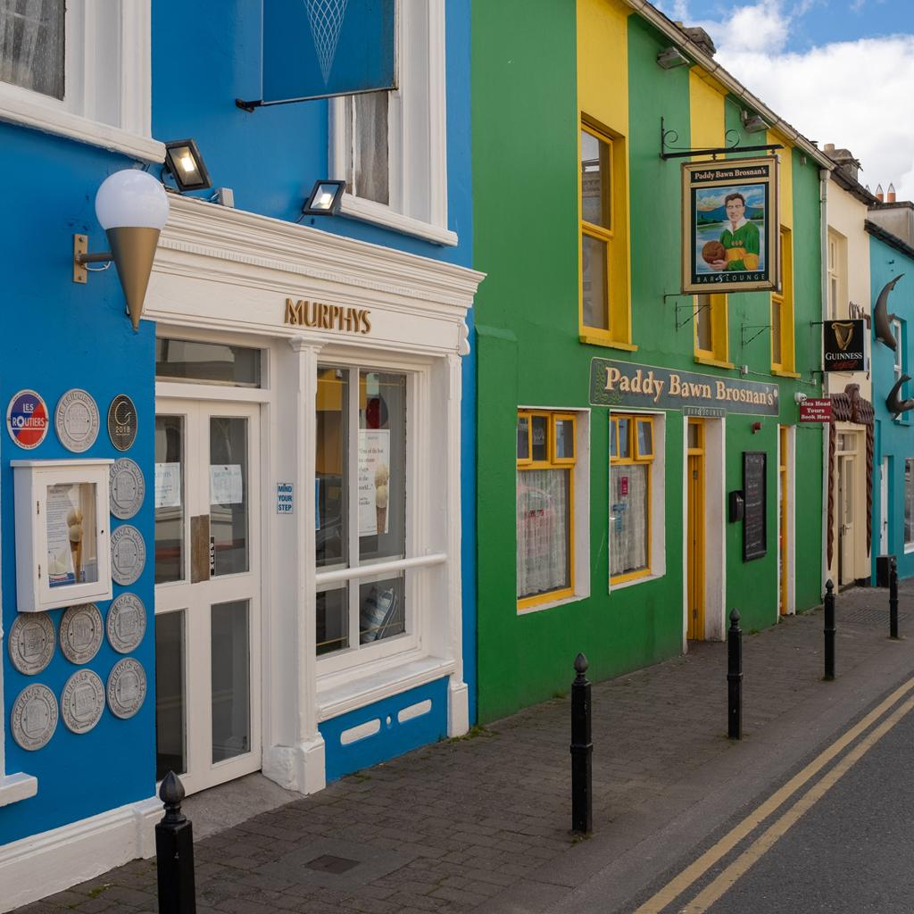
Food & Drink
Explore Dingle's artisan food scene, featuring locally produced treats, regional ingredients and small-town hospitality.
Dingle, Ireland
2.5 hours
€48
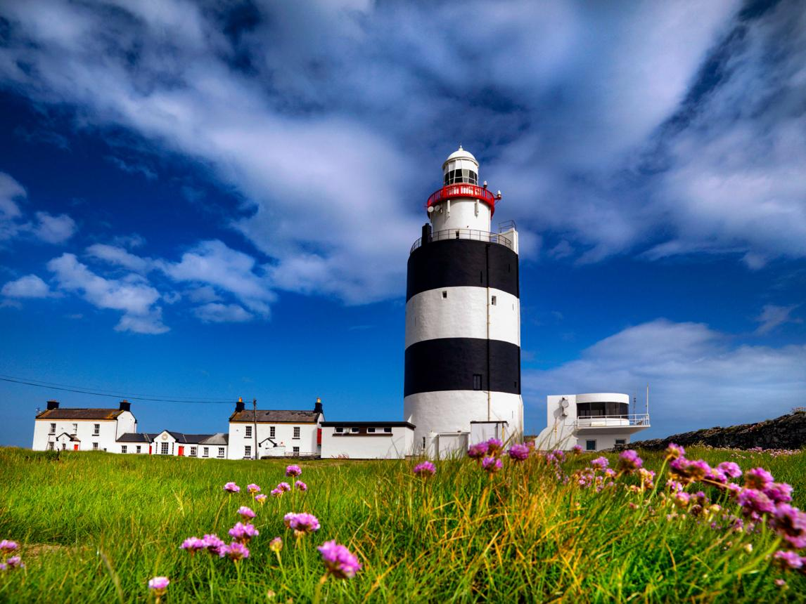
Coastal Escapes
Discover maritime history, rugged coastal scenery and the fascinating stories surrounding Hook Lighthouse.
Hook Peninsula, Co. Wexford
3 hours
€35
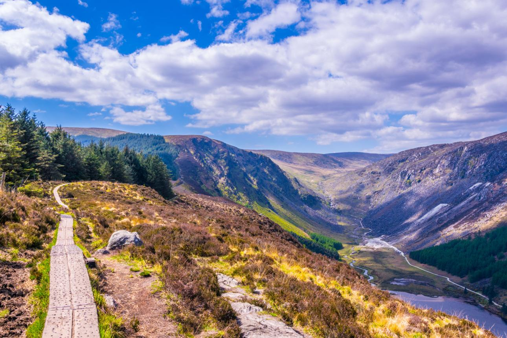
Hiking Retreats
Follow scenic mountain trails above Glendalough's lakes, discovering woodland, waterfalls and sweeping valley views.
Hook Peninsula, Co. Wexford
3 hours
Difficulty: Easy–moderate
€35